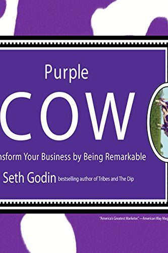

Library › Business & Startups
Purple Cow — Summary & Key Lessons

Transform your business by being remarkable — because safe is the riskiest strategy of all.
📖 OPEN THE FULL INTERACTIVE BREAKDOWN →🌐 Read it in Hindi, Hinglish, Gujarati, Tamil & 22 more languages — free, with audio.
💡 The Big Idea
Drive past fields of cows and you stop noticing them — until a PURPLE one appears. Godin's declaration: the TV-industrial complex is dead (interrupting masses with average products for average people no longer works — consumers have too many choices and too little time), and the only marketing left is building products worth remarking on: the remarkability must live IN the product, not the ad budget. The mechanics: target the OTAKU (obsessives who care deeply and talk loudly), design for the early adopters on the idea-diffusion curve — because they're the SNEEZERS who spread ideas to the mass market you can no longer reach directly, and understand that the opposite of remarkable is not 'bad' — it's 'very good' (very good is invisible; criticism is a feature of anything worth noticing). Safe is risky: the boring, focus-grouped, offend-no-one product is the one guaranteed to die quietly. In the post-advertising world, the product team IS the marketing team.
🧠 The 4 Key Lessons
Lesson 1: Very Good Is Invisible
Parts 1-2
'Very good' products meet expectations — and expectations met generate zero conversation. The remarkable product violates a norm ON PURPOSE: too fast, too small, too honest, too specialized, too generous. Godin's diagnostic: if you're aiming to please everyone, you've designed for no one to talk about. The discipline is choosing your EDGE — pick one dimension of the product experience and push it far enough that describing it sounds like exaggeration. Criticism arrives with remarkability; its absence means invisibility, which is worse.
📖 Example: The mid-2000s exhibit that aged perfectly: Dutch Boy didn't improve paint — it reinvented the CAN (a square jug with a handle and pourable spout, ending the drip-and-pry misery every painter knew). Hardware stores gave it shelf space, news covered a paint… Read the full example →
⚡ Do this: List the 5 'industry standard' annoyances your customers tolerate silently (packaging, pricing structure, wait times, jargon, fine print). Pick one and violate it flagrantly this quarter — make the violation the headline.
Lesson 2: Find the Otaku, Feed the Sneezers
Parts 2-3
Mass marketing chased the middle of the bell curve; the middle stopped listening. The diffusion curve's LEFT edge — innovators and early adopters — are the only people actively LOOKING for new things, and among them live the otaku: obsessives whose passion for a niche (hot sauce, mechanical keyboards, productivity apps) makes them broadcast towers. Marketing's new sequence: build something remarkable FOR the otaku → they sneeze it across the curve → the pragmatic majority hears about it from trusted friends (the only channel they still believe). Skipping to the mass market isn't ambition; it's shouting into a hallway everyone left.
📖 Example: Krispy Kreme's playbook Godin dissects: entering a new city, they gave away thousands of doughnuts to the doughnut-obsessed — who evangelized, queued at 5 AM, and made the HOT NOW sign local legend before a rupee of advertising. The otaku did the launch.… Read the full example →
⚡ Do this: Name your product's otaku precisely (who rearranges their day for this category?). Find 20 of them this month — communities, forums, meetups — and give them something remarkable to test, free, before any public launch.
Lesson 3: Milk the Cow, Then Breed a New One
Part 3
Remarkability decays: today's purple cow is next year's brown one (the first square paint jug is news; the fourth isn't). Godin's lifecycle: once a cow hits, MILK it completely — expand, extend, extract every benefit — but simultaneously fund the search for the NEXT cow with the proceeds, because the milking phase always feels permanent and never is. The organizational trap is that success installs conservatism: the team that took the wild bet becomes the team protecting the franchise, and protection is how remarkable companies become very good — then invisible.
📖 Example: The cautionary tale threaded through the book: brands that rode one purple cow into decades of line extensions — each safer than the last — until a startup with nothing to protect out-purpled them (the pattern that later played out with taxis vs Uber, hotels… Read the full example →
⚡ Do this: Split your roadmap explicitly: 80% milking the current winner, 20% breeding the next remarkable thing — with the 20% protected from the milking team's veto. Review the split quarterly; if the 20% is empty, that's the emergency.
Lesson 4: The Cheap Cow and the Niche Cow: Remarkable Without a Big Budget
Part 3: Practical Cowmanship
Remarkability sounds expensive — Godin insists the opposite: CHEAP can itself be the purple cow (the first firm to redesign the price structure of an industry is remarkable by arithmetic — think of what Motel 6 or IKEA did: extreme price is a story people retell), and so can EXTREME NICHING: the smallest viable market lets you be outrageous in ways mass positioning never permits, because you only need to astonish the otaku, not avoid offending everyone else. His practical toolkit: find the edge your industry is afraid of (too honest, too fast, too specialized, too guaranteed) and go ALL the way to it — half-measures produce weirdness without remarkability; measure your marketing by conversations started, not impressions bought; and treat the question 'who will talk about this and to whom?' as a design input BEFORE building, not a promotion problem after. If the sneeze isn't designed in, no budget can add it later.
📖 Example: Godin's small-business gallery: the lawyer who ONLY handles immigration for French-speaking engineers (absurdly narrow — and the automatic first call for every one of them, referred endlessly inside that community); Vosges' haute chocolate with bacon and… Read the full example →
⚡ Do this: Write the sentence a customer would use to describe you at dinner. If it wouldn't make anyone look up from their plate, redesign: go 10x narrower on who you serve, or take one promise (speed, guarantee, honesty, price structure) to an edge your competitors would call reckless. Then test it on five real customers: do they repeat it unprompted within a week?
✅ 5-Step Action Plan
- Choose one norm to violate flagrantly — make the product itself the story.
- Design for the otaku first; the mass market only hears sneezers.
- Welcome criticism as proof of visibility; fear silence, not complaints.
- Milk winning cows fully, but ring-fence budget for breeding the next one.
- Kill 'very good' projects early — they cost the most and echo the least.
💬 Best Quotes from Purple Cow
- “Safe is risky.”
- “The opposite of remarkable is very good.”
- “In a crowded marketplace, fitting in is failing.”
Interactive version: mark lessons as read, listen in your language, share quote cards.